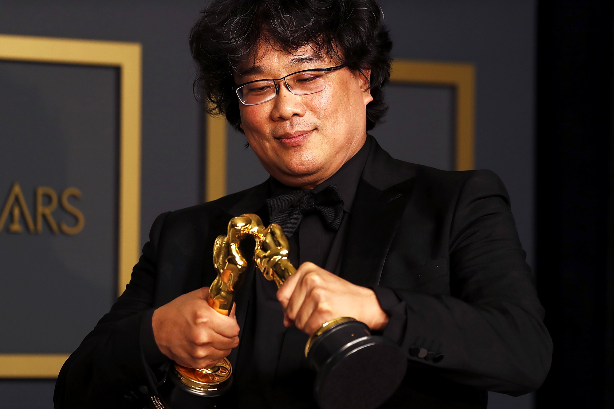
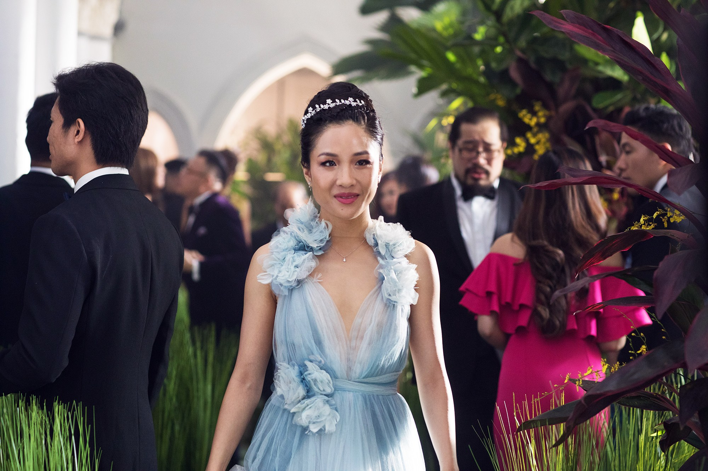
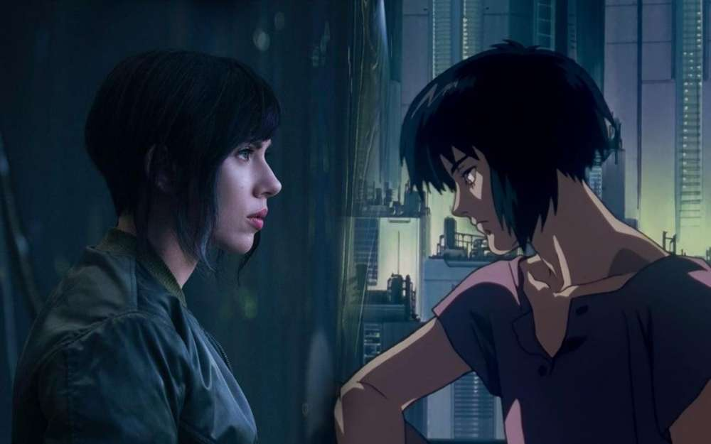
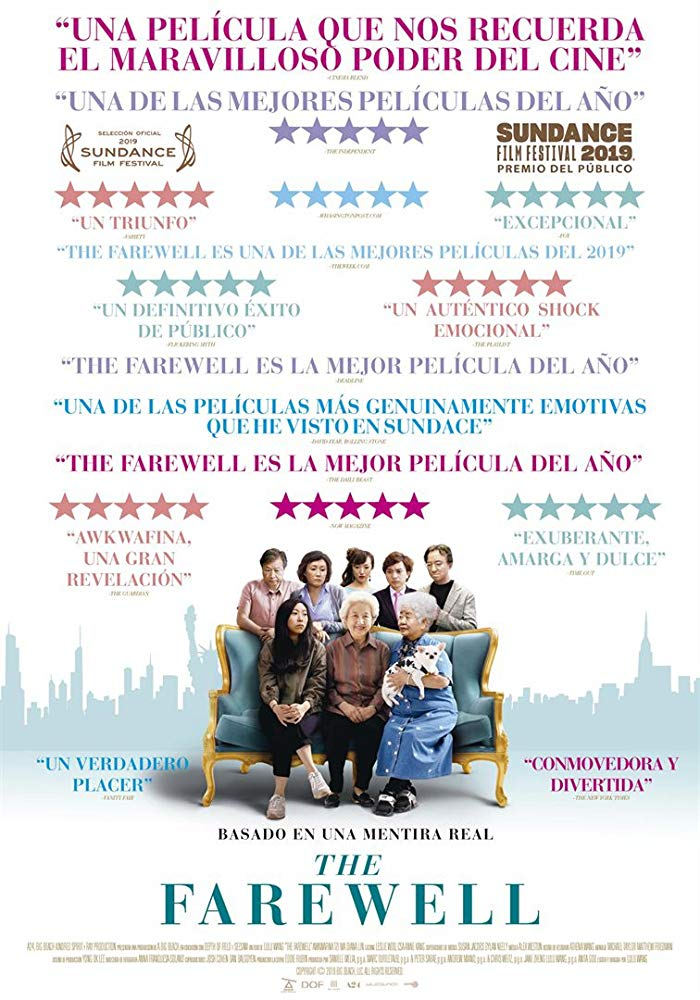

This is an interview with Kayla Areglado, a Culture and Media major at The New School. This zine first covers general thoughts on foreign films, then dives into questions following the recent 2018 release of Crazy Rich Asians. Topics include the following: Portrayal of asians in film/media, when they are not being pinned as the stereotypical math genius. How asians were represented then versus now, and this touches upon standards of what they look for in actors/actresses when casting. And overall, asian recognition in the film industry and the progression of recognition for foreign filmmakers and directors.



